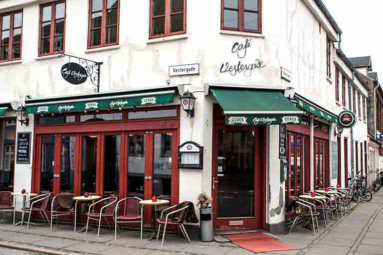

Third Project, Second Team!
And what a team! For third project we had the chance to pick who we want to be a team with. And everyone made good teams and a lot of good work, but, let's dig into project three requirements.
A lot of requirements and a lot of new things, but first of all, Mobile First focus. This time, this was the first website to be responsive, and we learned a lot for it. There were new processes, technologies, and requirements.
Finding the client and do the research
As in the case of first project, we had to find a company to create a website for. But this time, there was no conidition on which company to pick.
Yet, after a few days of sending e-mail and waiting, no one answered back, so we decided to go from place to place and ask, and this is how we found Cafe Vestergade 42 in the center of Aarhus.
But this time, each school subject had a new requirement. For the research, this time one of the requirements was to create one or two personas, based on all the informations we gathered.
Before creating the personas, again, we needed to create surveys, do interviews with customers, employees, the owner, etc. Yet, we also asked persons which never heard of Vestergade 42 about their behaviour when it comes to Cafe, what do they like, atmosphere, what coffee, etc
All of this research process was a part of Triangulation , which means to get informations about the same subject, but from as many different sources as possible.
Once Again, Let's Design!
After the entire Triangulation process, with creating personas, we started to design once again.
Of course, most of the design was inspired by the Cafe theme and colours, but the order of the items in the webpage was most of it decided by the personas top requirements. Because of this and because of our website was quite small, and it was one page design in the end, we didn't get to use all the processes, and information designing method, LATCH, which basically is a filter system, an organising tool made to help you finding different ways on how to link and connect pages trough a website in our case, for a better optimisation and to increase the amount of time the user spends on your website.
Rule of Three, Cropping, Alignment, a few design details we also used in the process of creating the website.
And after all the design, everything left was coding, which created a lot of problems, first, a very long loading time because of the Google's Calendar from the website structure, and the Google's Map frame also, services we replaced with pictures in the end
But the code came also with a lot of errors because we forgot about doing a validation on it after all the written code.
In the end, Vestergade 42 was, like all other projects and assignemnts, a new lesson, another step in my way as a Multimedia Designer.
To Vestergade 42's Website...
